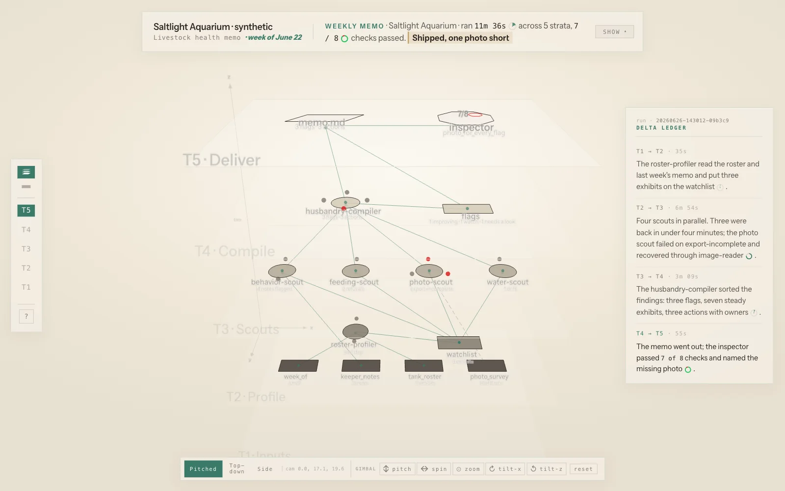
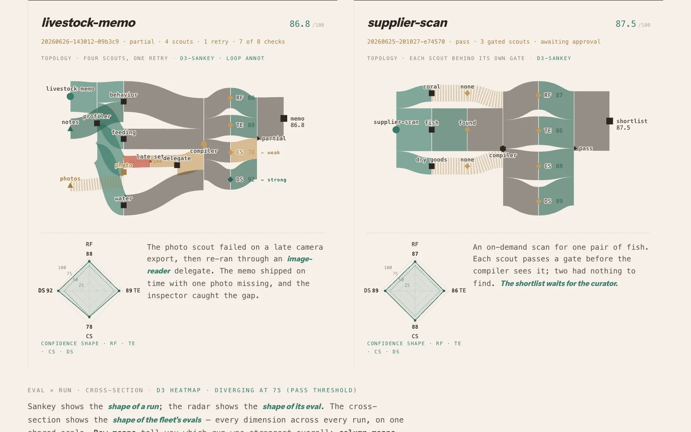

Making agent runs legible.
syntheticEvery trace on this page is synthetic.
OpenProse × JHDesign · Traces
OpenProse programs are contracts. Each one says what it requires, what it ensures, and what to do when things go sideways. Agents run them on a cadence and write every step to disk.
Dan Barrett, OpenProse's CEO, hired me for two tracks. The brand is the first case study. This page is the second track: views that make agent runs legible.
I designed these views on real customer runs, which stay private. Here every view reads one invented world. Saltlight Aquarium is a public aquarium with eleven exhibits. Its agents keep five responsibilities current. Five other organizations make up the fleet around it.
The week is June 22 to 28, 2026. Most views center on one run: Friday's livestock health memo.
The whole run is on disk. Nobody sees it.
Friday's memo run left a folder behind. It holds the program, six services, the bindings between them, and a private workspace for each service. A log records every step. Everything that happened is in there. Reading it takes a terminal and some patience.
Program
The contract: what the run requires, what it ensures, and its strategies.
- sources/
- roster-profiler.prose.md
- behavior-scout.prose.md
- feeding-scout.prose.md
- photo-scout.prose.md
- water-scout.prose.md
- husbandry-compiler.prose.md
Services
The six services it resolved: a profiler, four scouts and a compiler.
Record
The wiring, the step log, and how long each step took.
- bindings/
- caller/
- week_of.md
- keeper_notes.md
- tank_roster.md
- photo_survey.md
- roster-profiler/ watchlist.md
- behavior-scout/ behavior.md
- feeding-scout/ refusals.md
- photo-scout/ photos.md
- water-scout/ water.md
- husbandry-compiler/ memo.md
Bindings
What crosses between services: the caller's four inputs and each service's public output.
- workspace/
- photo-scout/
- __error.md✗ export-incomplete
- __delegate/image-reader/
- req-001.md
- req-001-response.md
- photos.md
- roster-profiler/ watchlist.md
- behavior-scout/ behavior.md
- feeding-scout/ refusals.md
- water-scout/ water.md
- husbandry-compiler/ memo.md
Workspace
Each service's private files. The photo scout's error and its delegate's request live here.
The hero run's directory, laid out the way OpenProse v0.14 writes one. Every file opens raw.
Are my responsibilities handled?
A customer asks one question of their agents. Are my responsibilities handled? So the first view answers in one paragraph.
Sparklines sit inside the sentences. Under the paragraph, a ledger lists each responsibility with its cadence and its last delivery. The latest delivery opens the run itself, in the next view.
One run in five strata.
Friday's memo run took 11m 36s. The strata view stacks it by phase: inputs, profile, scouts, compile, deliver. Three scouts were back in under four minutes. The photo scout failed on a late camera export.
The contract had a strategy for exactly that. Let the other scouts finish, retry the photo scout once, and name the missing photos. The run did all three. A delegate called image-reader read the late set, and the photo scout recovered.
The memo shipped at 07:41 PT with three flags and one photo short. The inspector re-read the run against its contract and passed 7 of 8 checks.

Hearing a run
The audio view plays the run as music. Each stratum sits an octave above the last. Each kind of node takes a note of one chord. Played from inputs to delivery, the run climbs as an arpeggio.
The same run, four ways at once.
The codex shows the run four ways at once. A paragraph tells it. A file tree lists it. A 3D graph draws it. A panel details whatever you pick. Click a node in any of them and the other three follow.
The trees view lays the same run out as a delegation tree beside a force graph. The photo scout's detour to its delegate shows up as a branch.
The photo scout selected, in the codex and in the trees.
One organization, then the fleet.
Saltlight's agents made 21 runs in week 26. The run atrium sets every one of them in a single 3D room, by program and by day. Friday's memo links back to the codex.
The periscope reads all of June for four programs: 70 runs, 65 of them over the bar. It cuts the month three ways: a band per program, a slice per day, a strip per run.
Five more organizations make up the fleet: Paperwhale Design, Graywind Observatory, Windfall Row Cidery, Ninefold Press, and OpenProse itself. The fleet atrium is the same room at fleet scale.
The radar and the heatmap score every program on four dimensions. They are runtime fidelity, task effectiveness, contract satisfaction and domain score. One visual language holds from one run to six organizations.
A run, read like a document.
The last view reads four of Saltlight's runs as an essay with charts. Each run gets a flow diagram, a radar and a few sentences. Every diagram comes from a real chart-library primitive. The layout is data.

The views are disposable.
Eleven views drew one invented week. Any of them could be redrawn tomorrow. The run record is what lasts: the contract, the log and the files on disk. Every view here is one reading of that record.